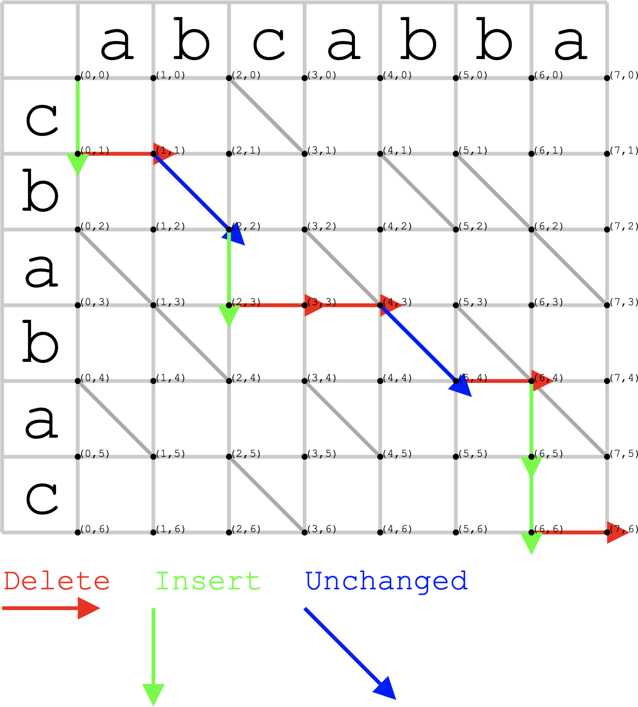

提醒
- deadline: 10 月 29 日 23:59:59
- 超过截止日期 (服务器时间) 本次作业以 0 分计
一些重要的要求 (违反导致 desk reject)
- 不超过 4 页正文 + 1 页引用
- blind review
本讲主题
源代码是软件工程的最重要产物。“分析源代码” 是许多软件工程研究/工具的基础。
软件工程研究中的常用工具：静态分析
- 扫描源代码
- 基于 AST 的分析
- 程序语义分析
扫描源代码
源代码：软件工程的最重要产物
Programs are meant to be read by humans and only incidentally for computers to execute. — D. E. Knuth
什么是代码？
- 人类需求在信息世界中的实现
什么是好的代码？
- Good code is readable.
- 我们能从代码中读出每个部分的 specification
- 我们的 reading list 中有一篇 “on the naturalness of software”
- 我们能从代码中读出每个部分的 specification
- Good code is proof-readable.
- 我们能从代码中读出它和 specification 的一致性
文本/词法分析
很多软件工程问题只需要源代码的浅层信息——例如一个不太深入的 “程序员喜欢给变量起什么名字” 研究。
文本分析
- 直接将代码当成行/字符的序列处理
词法分析
- 将代码作为 token 的序列处理
- 例子：语法高亮
"(a + b) * 2" =>
[ (SYM, '('), (ID, 'a'), (BIN_OP, '+'), (ID, 'b'), (SYM, ')'),
(BIN_OP, '*'), (INT, '2') ]
文本分析例子：Code Diff
代码作为文本分析的一个应用是大家常用的 diff
- 给定两份代码，如何生成行/每行内的 diff？

Diff = 求解编辑距离 (Myers'86)

编辑距离：思考
Open Problem: 怎样才能让程序员能更愉快地阅读 diff? (这是一个很不错的软件工程研究问题)
“编辑距离最小” 的 diff 是个不错的 hack
- 但它并不总是我们想要的
- 缺少修改的解释
- 我们很容易知道 “改了什么”，但不知道 “为什么要这样改” (semantics diff)
- 对大的修改不友好
- 对不同开发经验的读者不友好
- 缺少修改的解释
基于 AST 的分析
Abstract Syntax Tree (AST)
A tree representation of the abstract syntactic structure of source code written in a programming language
一般编程语言都是用文法描述的
- 产生规则的推导过程自然构成一棵树
- AST 是推导树的简化形式
- 同时包含词法和语法的信息
- 包含一定的语义信息，例如类型
例子: Clang AST Dump
使用非常简单：clang -Xclang -ast-dump -fsyntax-only a.c
int f(int a, int b) { if (b == 0) return a; else { ... } }
|-FunctionDecl used f 'int (int, int)'
| |-ParmVarDecl used a 'int'
| |-ParmVarDecl used b 'int'
| `-CompoundStmt
| `-IfStmt
| |-BinaryOperator 'int' '=='
| | |-ImplicitCastExpr 'int'
| | | `-DeclRefExpr 'int' lvalue ParmVar 'b' 'int'
| | `-IntegerLiteral 'int' 0
| |-ReturnStmt
| | `-ImplicitCastExpr 'int'
| | `-DeclRefExpr 'int' lvalue ParmVar 'a' 'int'
| `-...
AST 的应用：Lint
组织项目时，通常有 Style Guide，例如 Google 对 C++ 的要求：
- 一行不超过 80 个字符
- 变量名：all lowercase, 下划线 (
table_name, nottableName) - We do not use C++ exceptions; Avoid using Run Time Type Information (RTTI)...
Lint 就是最早出现的代码风格扫描工具，绝大部分规则可以基于 token/AST 检查
- 少量信息需要更复杂的语义信息
- 例子：函数在所有路径都有返回值
AST 的应用：软件度量
Halstead’s software physics
- $n_1/n_2$: 程序中的不同 operator/operand 数量
- $N_1/N_2$: operator/operand 出现次数
一系列 metrics (统计量)，与一些软件属性存在相关性
- 越长的代码 bug 越多；越复杂的代码 bug 越多……
- program length $N = N_1 + N_2$
- program volume $V = N \log_2 (n_1 + n_2)$
- specification abstraction level $L = 2n_2 / (n_1 \cdot N_2)$
- program effort $E = (n_1 + N_2 \cdot N \cdot \log_2(n_1+n_2) ) / 2n_2$
AST 的应用：Clone Detection
“我们不生产代码，我们只是互联网的搬运工”
- 代码克隆增加了一条隐藏的 specification: 一边改了，另一边也需要改
时间长了就忘记了 → 下次重构的时候 break 了 specification...
- Token-based: “CCFinder: A multilinguistic token-based code clone detection system for large scale source code” (TSE, 28(7), 2002)
- Tree-based: “Scalable detection of semantic clones” (ICSE'08)
AST 的应用：代码变形
AST 是程序的结构化 “字面” 信息
- 是一个相当通用的代码中间表示
代码格式化
- GNU indent, bcpp, Google Java format, ...
- 格式化代码 = 遍历 AST 并按照特定规则打印
Transcompiler (transpiler), source-to-source compiler
- ES6/ES10/JSX → ES5 (保证浏览器兼容，例如 IE8)
AST 的应用：代码变形 (cont'd)
Mutation testing: 度量测试用例集的好坏
- 在程序里植入一些随机的 bugs (potential bugs)
- 越多 mutants 被检测出来，说明测试数据越充分
例子：µJava 实现
public class UOI_Writer extends MutantCodeWriter {
private static final String uop_string[] =
{ "++", "--", "++", "--", "~", "!", "+", "-" };
public void visit(Variable p) throws ParseTreeException { ...
if (mutant_op == UnaryExpression.PRE_DECREMENT || // --x
mutant_op == UnaryExpression.PRE_INCREMENT) { // ++x
mutated = "(" + op + p.toString() + ")"; // dump AST
} else {
mutated = "(" + p.toString() + op + ")";
}
...
AST 的应用：代码变形 (cont'd)
“代码变形” 定义了一个搜索空间
- GenProg: 甚至可以用遗传算法去搜索能通过最多测试用例的补丁
- 看起来很疯狂，但其实有它的道理
一个很大的研究领域
- 程序综合 (synthesis) 和自动修复 (repair)
AST：一些局限与思考
局限 1: 对程序语义理解不足
- 有时候我们需要更准确的语义分析
局限 2: 元编程处理困难
- 元编程：可以在编译前 “生成代码”
#define FORALL(X) X(Tom) X(Jerry) X(Spike) X(Tyke)
#define PRINT(x) puts(#x);
// usage: FORALL(PRINT)
程序语义分析
想要更多的语义信息？
进一步分析有关程序执行的性质：某个分支是否可达？某个变量是否可能是某个特定的值？……
典型的应用场景
- 编译优化 (静态分析最初的应用场景)
- bug/漏洞检测
- 程序证明
- ……
char buf[SIZE];
strncpy(dest, src, SIZE);
int len = strlen(dest); // insecure!
(狭义的) 静态程序分析
从程序 + 语义推导程序的性质
- all possible traces (trace semantics)
- properties at program points
但精确计算程序的性质是 undecidable 的
- (无法枚举无穷 traces)
- (就算对于有穷程序，枚举也不现实)
静态分析：做出合理的近似 (over-approximation)
- “sound” 的分析：总是给出 “正确” 的结论
- 但允许不精确
- 例如：“这段代码可能被执行”
- 但允许不精确
例子：Reachability Analysis
判断一对代码之间是否存在调用链
- 土名字：call graph
- 例如判断是否调用了不安全的函数；使用了哪些第三方库……
Call graph 可能比你想象的困难
- 大量的 meta programming, reflection, dynamic loading, instrumentation, ...
- “Static analysis of Java enterprise applications: frameworks and caches, the elephants in the room” (PLDI'20)
例子：Program Slicing
如果一个 assertion failure 被触发了，到底是谁的锅？
foo();
bar();
baz();
assert(global == 0);
- 可以肯定的是，与 assert 无关的代码都删除
- “Program slicing” (ICSE'81)
- program “modulo” property
- “Program slicing” (ICSE'81)
- 一个相关的分析: taint analysis
- 关注哪些输入会影响一段代码
实现静态分析
复杂的分析需要更简单的表示
- IR (Intermediate Representation)
- 通常是静态单赋值 (Static Single Assignment)
- 相当于程序被 normalize 成一种特定简单的形式

小结
(狭义的) 静态程序分析：一个巨大的研究领域
- 编程语言中的很多机制都给分析带来挑战
- intra/inter procedural
- flow/context sensitivity
- 动态特性
- 有兴趣的同学可以选修《软件分析》
- (不在本课程讨论范畴)
总结
静态程序分析
取决于你的研究问题
- 直接以文本形式处理源代码？
- 解析 AST？
- 静态分析？
实际
- 了解自己需要什么分析
- 有现成的 → 拿来用就对了
- Clang/LLVM, Soot, Doop, WALA, ...
- 没有现成的 → 放弃
- 可以通过改变问题来解决嘛😂
- 有现成的 → 拿来用就对了